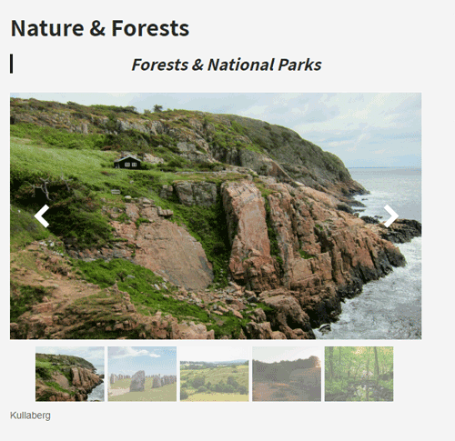

Fast & easy. Wordpress.
Do you have a dog? Are you bored of going the same route? Then I made a website exactly for you! I am the proud owner of a dog that has a lot of energy and is always up for new adventures. I gathered destinations and activites in Skåne and what to think about if you want to go hiking with your dog on my website TRAILBUDDIES.
CONCEPT
BUILDING
As a part of my school we also learn how to build websites with Wordpress. It was a fun experiment, but I will prefer coding most of the time - more freedom! I used a Wordpress-Theme so the design was not by me.

